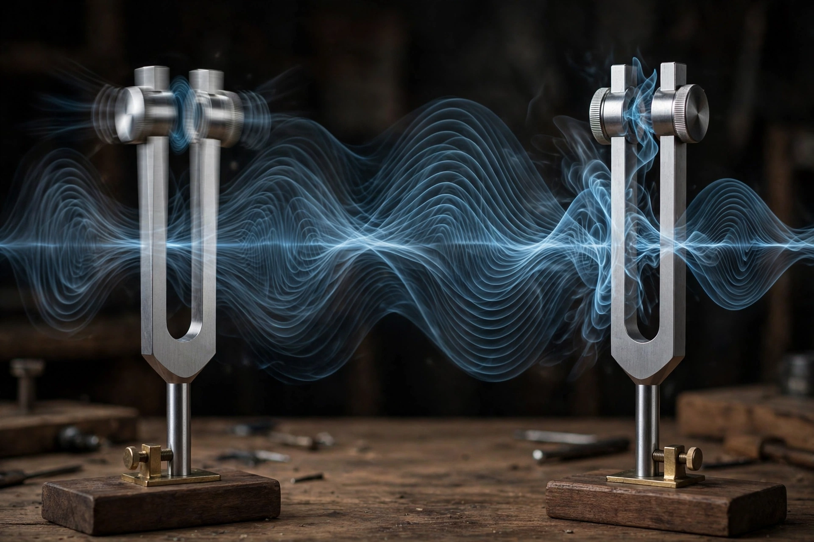

Resonance is the tendency of a physical system to oscillate with greater amplitude at some frequencies than at others, known as resonant frequencies. At these frequencies even small periodic driving forces can produce large amplitude oscillations, because the system stores vibrational energy.

Resonance occurs in mechanical systems (a pendulum or swing), acoustic systems (musical instruments), electrical circuits (LC circuits), optics, and quantum mechanics. The quality factor Q measures sharpness of resonance.
Famous examples include the shattering of a wine glass by sound, MRI and NMR in medicine and chemistry, radio tuning, and structural failures sometimes attributed to resonance, such as the Broughton Suspension Bridge (1831). The Tacoma Narrows Bridge collapse is now attributed mainly to aeroelastic flutter.
In chemistry, resonance describes delocalised electrons in molecules such as benzene, represented by multiple contributing structures. See oscillation.